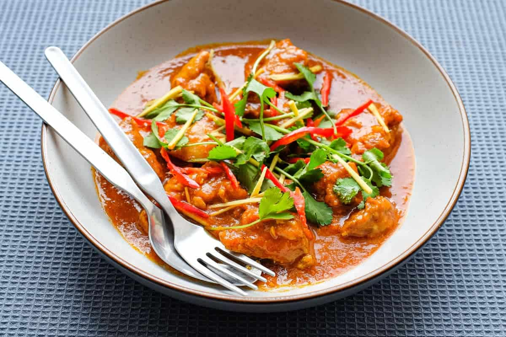

Chicken Curry

Description
Burmese chicken curry is one of the most common dishes that Burmese people like and most people used to cook many
times a week.
It includes chicken with some staffs like salt, masala and chilli
It is good to eat with rice especially with its sauce.
Ingredients
- Chicken thigh
- Salt
- Tumeric
- Pepper
- Onion
- Ginger
- Garlic
- Chilli Powder
- Oil
Steps
- Sprinkle curry powder, salt and turmeric over the chicken and set aside.
In a blender or food processor mix onions, garlic, paprika, chilli powder and ginger into a thick paste.
- Heat the oil in a deep pan and fry the paste over a medium heat for about 10 minutes.
- Add the chicken and turn up the heat stirring for another few minutes. Add the tomatoes and stir for a
further 5 minutes.
- Add 1 1/2 cups of warm water (enough to cover the chicken), the lemongrass and fish sauce. Stir well and
bring to a simmer.
- Turn down the heat to low, partially cover the pan and very gently simmer for at least 30 minutes until the
chicken is tender.
- Remove the lid and simmer for a further 10-15 minutes to reduce the sauce. Fish out the lemongrass - check
for seasoning and serve!